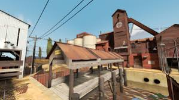
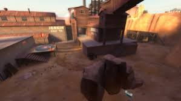
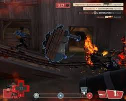

Modos de Juego
En Team Fortress 2, dos equipos rivales, RED y BLU, compiten por diversos objetivos en una gran variedad de mapas:
Captura la Bandera (CTF)
Capturar la Bandera (abreviado como «CTF» por su nombre en inglés, Capture the Flag) es un modo de juego, en el que el objetivo de ambos equipos es capturar el dosier enemigo, también denominado «inteligencia», «maletín» o simplemente «bandera». La ronda termina cuando algún equipo captura el límite de dosieres (por defecto 3). Si no se capturan antes de que acabe el tiempo la partida entrará en Muerte Súbita, excepto si algún dosier aún está en disputa, que se jugara un tiempo extra hasta que vuelva a la base del equipo.

Puntos de Control (CP)
Los mapas de Punto de Control tienen dos modos de juego principales.
Los puntos de control son plataformas circulares con una luz del color del equipo en el centro - o en el caso de los puntos neutrales, una luz blanca. Para capturar el punto perteneciente al equipo contrario, el jugador simplemente tiene que ponerse encima de él hasta que vuelta del color de tu equipo. Cuantos más compañeros estén encima de él, más rápido se captura, hasta un punto límite. Los Scouts y aquellos que tengan equipados el Tren del Dolor contarán como 2 jugadores para capturar el punto. Se interrumpirá el proceso de captura cuando un jugador del equipo contrario entre en el punto. Si todos los jugadores que estaban capturando un punto mueren o salen de él, el proceso de captura no se reiniciará, pero comenzará a disminuir poco a poco.

Carga Explosiva (PL)
Carga Explosiva es un modo de juego en el cual el equipo BLU debe escoltar una Vagoneta llena de explosivos a través de una serie de puntos de control hasta la base del equipo RED en una determinada cantidad de tiempo.
La tercera etapa de Pipeline, un mapa de Carrera de Vagonetas.
Carrera de Vagonetas es otro modo de juego basado en Carga Explosiva, en el cual ambos equipos RED y BLU tiene una vagoneta de carga explosiva. Para ganar, cada equipo debe empujar su vagoneta a través del territorio enemigo hasta alcanzar su punto final mientras evitan que el equipo contrario logre lo mismo.
